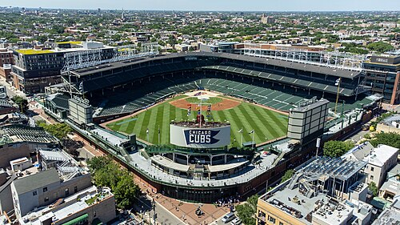

A Little History
The Chicago Cubs are one of the oldest teams in Major League Baseball. They were founded in 1876 and are one of the original members of the National League. For most of their history they were known as the "Lovable Losers" — they went 108 years without winning a World Series. That all changed in 2016 when they finally broke the drought in one of the greatest Game 7s in baseball history.
The Cubs play at Wrigley Field on the North Side of Chicago. Wrigley is the second-oldest stadium in Major League Baseball and is famous for its ivy-covered outfield walls, manual scoreboard, and rooftop seats on the buildings across the street.

Why I'm a Cubs Fan
Here are the main reasons I love this team:
-
The 2016 World Series — It was one of the greatest sporting moments ever. Game 7 went to extra innings and the Cubs came back to win.
- Kris Bryant made the final throw to first base
- 108 years of waiting finally came to an end
- The celebration at Wrigley was unbelievable
-
Wrigley Field — There is no ballpark like it. The ivy on the walls, the hand-operated scoreboard, the bleachers — it's a one-of-a-kind experience.
- Built in 1914, still going strong
- Night games weren't even played there until 1988
- The Fan Culture — Cubs fans are some of the most loyal in all of sports. No matter what the record is, Wrigley is always packed.
- The Front Office — Theo Epstein built the 2016 team using smart analytics and drafting. As someone interested in business and data, I respect that approach.
- Fly the W — After every win, a big blue "W" flag goes up over the scoreboard. It's a simple tradition but it never gets old.
Watch: 2016 World Series Final Out
This is the moment 108 years of waiting ended. If you haven't seen it, watch it now.
Cubs By the Numbers

Chicago Cubs Bullpen Dashboard — Tableau
This dashboard breaks down Chicago Cubs bullpen performance — ERA, innings pitched, and more. Hover over the charts to explore the data interactively.

Think You Know the Cubs?
I made a trivia game to test your knowledge of Cubs history. Give it a try!
Play the Cubs Trivia Game →